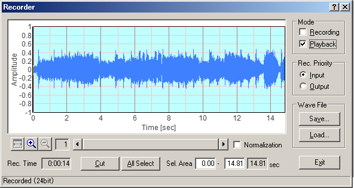
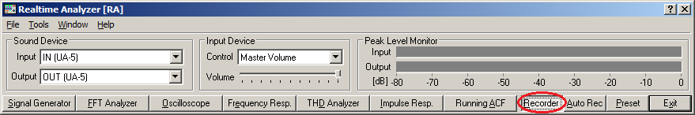
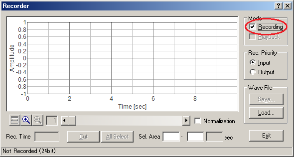
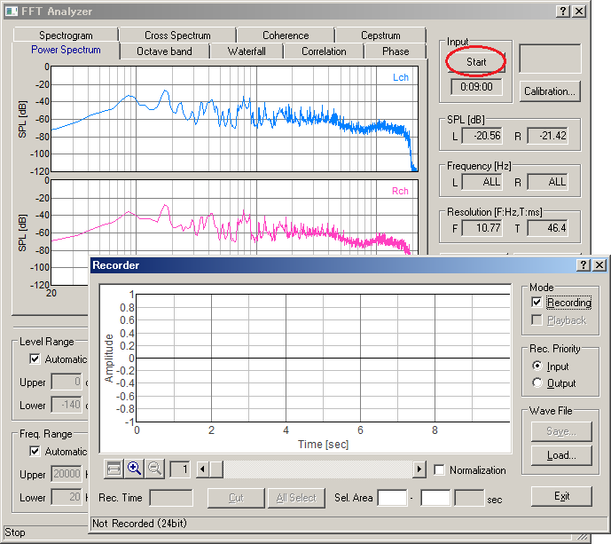
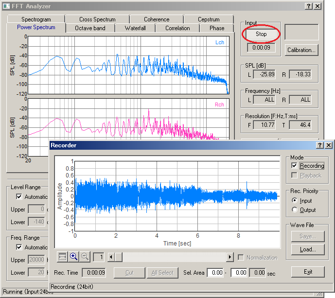
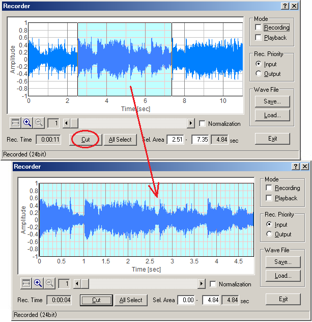

DSSF3 > RA > Operation Guide > Sound recording in RA
Sound recorder
In the new version of the DSSF3, the sound recorder window has been newly added. Sound recording up to about 10 minutes is available. Simultaneous sound playback and analysis by the FFT analyzer is also possible.

How to use the sound recorder
- Click the Recorder button on the RA's main window to open the sound recorder.

- To start recording, check the Recording box on the Recorder window.

- Start one of the Signal Generator, the FFT Analyzer, or the Oscilloscope. When the FFT Analyzer or the Oscilloscope is started, the input signal is recorded. When the Signal Generator is started, the generated signal is recorded. To stop recording, click the Stop button of the window that was started.

- To start playback of the recorded signal, click the Playback button of the Recorder window, and start the FFT Analyzer or the Oscilloscope. The recorded signal is played and simultaneously analyzed by the FFT Analyzer or the Oscilloscope.

- Right click on the recorded waveform and drug the mouse to change the selection. Selected region is displayed in blue. Click the Cut button to cut out the selected range

- Click the Save button to Save the recorded signal as the wave file (.wav format).
- Click the Load button to Load the wave file. Loaded wave file can be played and analyzed as the recorded sound.
DSSF3 > RA > Operation Guide > Sound recording in RA